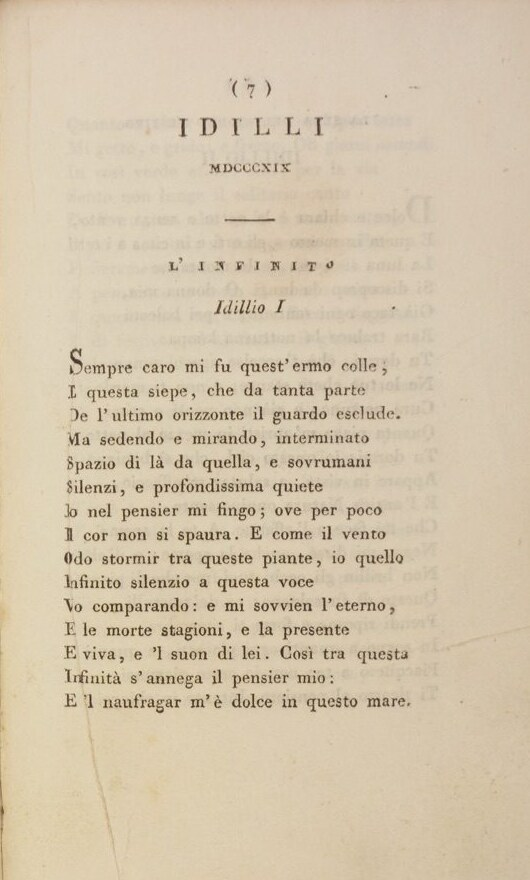
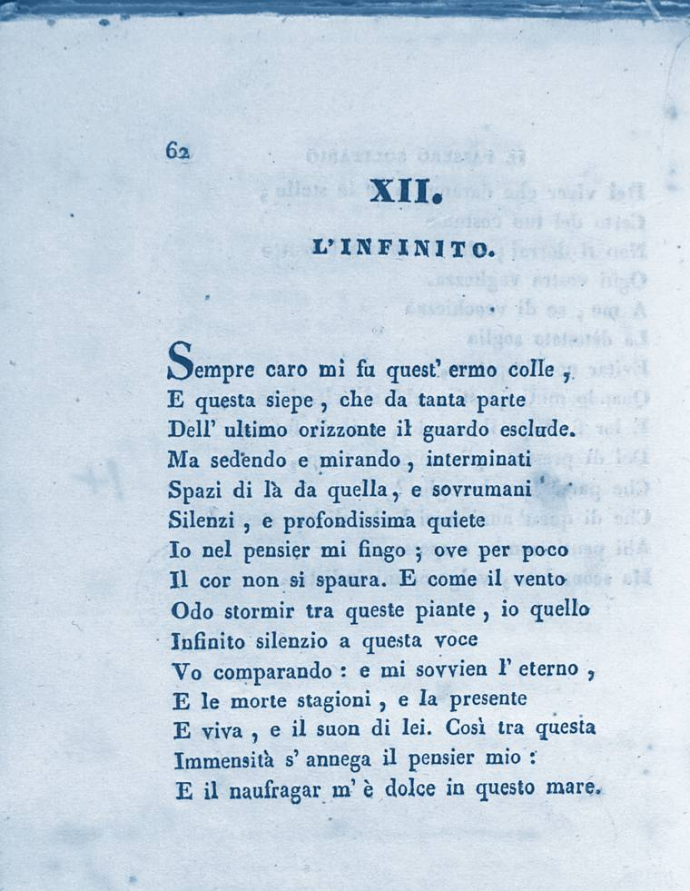

Leggo
I Canti nel testo dell’esemplare corretto dell’edizione Starita (N35c), con i testimoni a stampa e le traduzioni.
Leggi L’infinitoLa stessa scelta su Leggo Leopardi e su Leggo Manzoni.
Scelta: banda piena con testo bianco, colore alleggerito. Blu #4877A1. Verde #73978B invariato, con il testo del menu un po’ più grande e in grassetto, per una lettura sicura.


I Canti nel testo dell’esemplare corretto dell’edizione Starita (N35c), con i testimoni a stampa e le traduzioni.
Leggi L’infinitoIl colore principale, come nella prima versione; testo e firma chiari.
I Canti nel testo dell’esemplare corretto dell’edizione Starita (N35c), con i testimoni a stampa e le traduzioni.
Leggi L’infinitoLa tinta del blocco dietro le pagine in home; testo e firma scuri.
I Canti nel testo dell’esemplare corretto dell’edizione Starita (N35c), con i testimoni a stampa e le traduzioni.
Leggi L’infinito